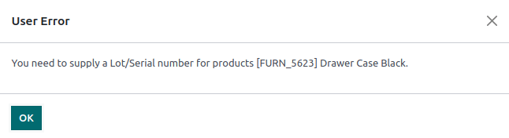
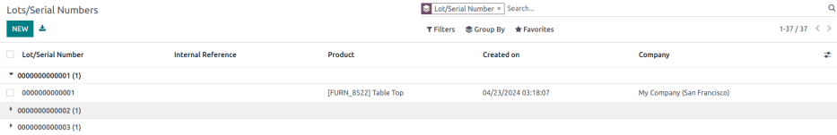

Lot numbers¶
Lots are one of the two ways to identify and track products in Odoo. They typically represent a specific batch of products that were received, stored, shipped, or manufactured in-house.
Manufacturers assign lot numbers to groups of products sharing common properties, facilitating end-to-end traceability through their lifecycles.
Lots are useful for managing large quantities of manufactured or received products, aiding in tracing items back to their group, particularly for product recalls or expiration dates.
Configuration¶
To track products by lots, enable the Lots & Serial Numbers feature. Then, configure each product to be tracked by serial numbers on the product form.
Enable lots & serial numbers¶
To track products using lots, enable the Lots & Serial Numbers feature. Go to the , scroll down to the Traceability section, and tick the checkbox next to Lots & Serial Numbers. Then, click Save.

Track by lots¶
Once the Lots & Serial Numbers feature is activated, configure individual products to be tracked using lots. To do this, go to , and choose a product to configure.
On the product form, go to the Inventory tab. In the Traceability section, select the By Lots option in the Tracking field. Now, new or existing lot numbers can be assigned to newly-received or manufactured batches of this product.
Important
If a product has stock on-hand prior to activating tracking by lots or serial numbers, use an inventory adjustment to assign lot numbers to existing products in stock.
Assign lots for shipping and receiving¶
Assign new lot numbers to incoming goods on the receipt form. When shipping outgoing goods, select products with specific lot numbers on the delivery order form.
On receipts¶
Assigning new or existing lot numbers to incoming goods can be done directly on receipts.
To begin, go to the app to create and confirm a PO for products tracked by lot numbers. Then, click the Receipt smart button that appears at the top of the page to navigate to the warehouse receipt form.
Note
Alternatively, navigate to an existing receipt by going to the app, clicking the Receipts Kanban card, and choosing the desired receipt.
Important
Clicking Validate before assigning a lot number triggers a User Error, indicating that a lot number must be assigned before validating the receipt.
On the receipt form, on the product line in the Operations tab, select the ⦙≣ (bulleted list) icon to the right of the product that is tracked by lot numbers.
The bulleted list icon on the product line.¶
Doing so opens the Detailed Operations pop-up window, where the Lot/Serial Number and Done quantity are assigned.
The two ways to assign lot numbers are manually and copy/paste.
Manual assignment¶
To manually assign lot numbers, click Add a line, and choose the location the products will be stored in under the To column. Then, type a new Lot/Serial Number, and specify the Done quantity.
Note
To assign multiple lot numbers, or store to multiple locations, click Add a line, and type a new Lot/Serial Number for additional quantities. Repeat until the total in the Done column matches the Quantity Done at the top.

Copy and paste¶
From a spreadsheet with all of the lot numbers received from the supplier (or manually chosen to assign upon receipt), click Add a line, and proceed to copy and paste the lot numbers, in the Lot/Serial Number column.


Lot numbers copied to the lot number line, with each lot number on its own line.¶
After clicking away from the text field, Odoo automatically generates the necessary lot number lines. The quantities in the Done column match the first entry. Manually adjust the To locations and Done quantities for each lot number, as needed.
Once all product quantities have been assigned a lot number, click Confirm to close the pop-up window. Then, click Validate on the receipt form.
On delivery orders¶
Odoo makes it possible to specify which lot numbers for a product are chosen for outgoing shipment on a delivery order form.
To begin, create or select an existing quotation from the app. After confirming the SO, the Delivery smart button becomes available. Click the Delivery smart button to view the warehouse receipt form for that specific SO.
Note
Alternatively, navigate to delivery orders by going to the app, and clicking the Delivery Orders Kanban card.
Clicking the Delivery smart button opens the the delivery order form, where lot numbers are picked for delivery. In the Operations tab, click the ⦙≣ (bulleted list) icon to the right of the product that is tracked by lot numbers. Clicking that icon reveals a Detailed Operations pop-up window.
In the Detailed Operations pop-up window, a Lot/Serial Number is chosen, with the full Reserved quantity taken from that specific lot (if there is enough stock in that particular lot).
If there is insufficient stock in that lot, or if partial quantities of the Demand should be taken from multiple lots, change the quantity in the Done column to only include that specific part of the total quantity.
Note
The lot automatically chosen for delivery orders varies, depending on the selected removal strategy (FIFO, LIFO, or FEFO). It also depends on the ordered quantity, and whether the lot’s on-hand quantity is enough to fulfill the order.
Next, click Add a line, select a different Lot/Serial Number, apply the remaining Done quantities, and click Confirm to close the pop-up window. Lastly, click the Validate button to deliver the products.

Lot management¶
Manage and view existing lot numbers for products in the Lot/Serial Numbers dashboard by going to .
By default, lot numbers are grouped by product, and selecting the drop-down menu for each product displays the existing lot numbers. Select a lot number to modify or add details linked to the lot. Lot numbers can also be created from this page, by clicking the New button.

Display lot numbers, grouped by products, on the Lot/Serial Number dashboard.¶
Modify lot¶
Clicking a lot from the Lot/Serial Number dashboard reveals a separate page where additional information can be provided about the lot.
Tip
Odoo automatically generates a new Lot/Serial Number to follow the most recent number. However, it can be edited, by clicking the line under the Lot/Serial Number field, and changing the generated number to any desired one.
On the lot number form, the following fields can be modified:
Lot/Serial Number: Change the lot number linked to the Product
Internal Reference: Records an alternative lot/serial number used within the warehouse that differs from the one used by the supplier manufacturer.
Company: Specify the company where the lot number is available.
Description: Add extra details about the lot or serial number in this text field.
Important
The Product and Quantity fields cannot be modified, as the lot numbers are linked with existing stock moves.

See also
Reserve lot number for a product¶
To create a lot number for a product, begin by going to , and click New.
Important
Creating a lot number reserves it for a product but does not assign it. To assign lot numbers, refer to the section on assigning lot numbers on receipts.
Tip
While Odoo automatically generates a new Lot/Serial Number to follow the most recent number, it can be edited and changed to any desired number, by clicking the line under the Lot/Serial Number field on the lot form, and changing the generated number.
Once the new Lot/Serial Number is generated, click the blank field next to Product to reveal a drop-down menu. From this menu, select the product to which this new number will be assigned.
Example
The lot number, 0000011, is created for the product, Drawer Black.

After a new lot number has been created, saved, and assigned to the desired product, the lot number is saved as an existing lot number linked to the product, and can be selected when assigning lot numbers to products on a receipt, or when making an inventory adjustment.
Example
After creating the lot number, 0000011 appears as an option for Drawer Black when assigning
lot numbers on the Inventory Adjustment page.
Manage lots for different operations types¶
By default, new lots can only be created when receiving products, and existing lot numbers cannot be used. For sales orders, only existing lot numbers can be utilized, and new ones cannot be created on the delivery order.
To change the ability to use new (or existing) lot numbers on any operation type, go to the , and select the desired operation type.
On the operation type form, under the Lots/Serial Numbers section, tick the Create New checkbox to enable new lot numbers to be created during this operation type. Choose Use Existing ones if only existing lot numbers can be selected.

Tip
For inter-warehouse transfers involving products tracked by lots, it can be useful to enable the Use Existing Lots/Serial Numbers option for warehouse receipts.
Traceability¶
Manufacturers and companies can refer to traceability reports to see the entire lifecycle of a product: where it came from, when it arrived, where it was stored, who it went to (and when).
To see the full traceability of a product, or group by lots, go to the . Doing so reveals the dashboard.
From here, products with lot numbers assigned to them will be listed by default, and can be expanded to show the lot numbers those products have assigned to them.
To group by lots, begin by removing any filters in the Search… bar. Then, click the Group By drop-down menu, select Add Custom Group, and select Lot/Serial Number from the drop-down menu. Then, click Apply.
Doing so displays all existing lots and serial numbers, and can be expanded to show all quantities of products with that assigned number.
Traceability report¶
To view a full stock moves report for a lot number, select the lot number line from the Lots/Serial Number dashboard. On the lot number form, click the Traceability smart button.